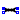
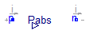
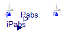
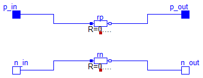
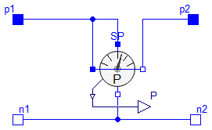

| Name | Description |
|---|---|
| Load_Pfixed_I0 | |
| Load_Pin_I0 | |
|  Line | |
| Pmeter |

Extends from Modelica.Electrical.Analog.Interfaces.OnePort (Component with two electrical pins p and n and current i from p to n).
| Type | Name | Default | Description |
|---|---|---|---|
| Power | Pnom | 10 | Nominal absorbed power [W] |
| Type | Name | Description |
|---|---|---|
| PositivePin | p | Positive electrical pin |
| NegativePin | n | Negative electrical pin |
| output RealOutput | Pabs |

Extends from Modelica.Electrical.Analog.Interfaces.OnePort (Component with two electrical pins p and n and current i from p to n).
| Type | Name | Description |
|---|---|---|
| PositivePin | p | Positive electrical pin |
| NegativePin | n | Negative electrical pin |
| input RealInput | iPabs | |
| output RealOutput | Pabs |

| Type | Name | Default | Description |
|---|---|---|---|
| Length | Lw | 10 | Wire length [m] |
| Type | Name | Description |
|---|---|---|
| PositivePin | p_in | input positive pin |
| NegativePin | n_in | input negative pin |
| PositivePin | p_out | output positive pin |
| NegativePin | n_out | output negative pin |

| Type | Name | Description |
|---|---|---|
| output RealOutput | P | |
| PositivePin | p1 | |
| PositivePin | p2 | |
| NegativePin | n1 | |
| NegativePin | n2 |